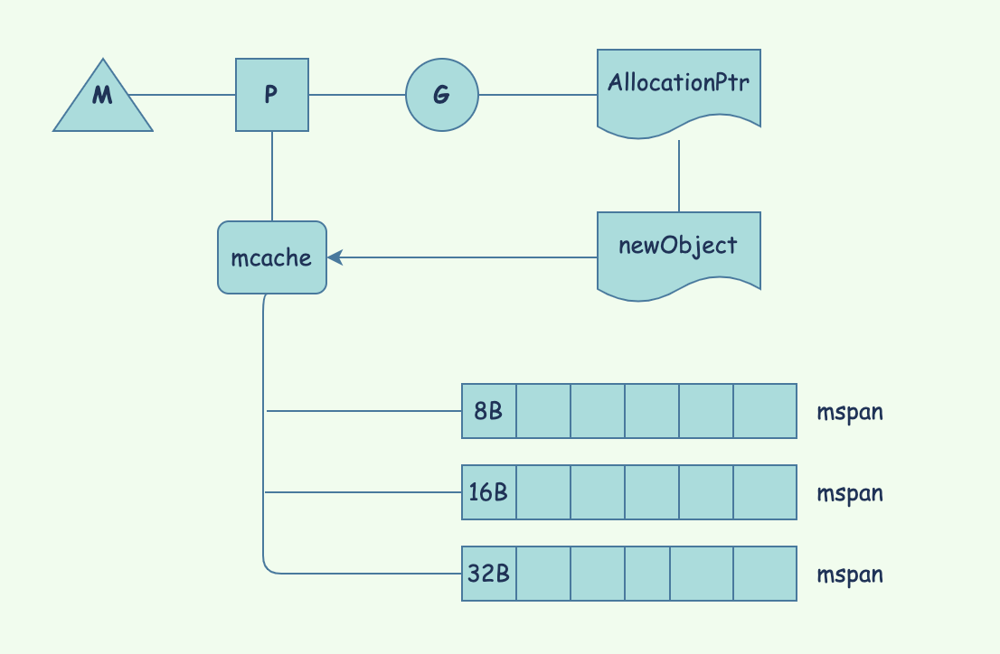

Go内部的内存结构
每一个Go进程都拥有由操作系统分配的虚拟内存，这是进程能访问的所有内存空间。虚拟内存中真正使用的内存叫做Resident Set。
Golang中没有分年代的内存管理，这是由TCMalloC(Thread-Caching Malloc，线程缓存的内存分配)模型决定的。
在任意一个时间点，M只会处理一个goroutine的执行，在goroutine的执行过程中，如果需要进行内存分配，那么当前的goroutine会使用对应P的mcache，在mcache中寻找第一个可用的内存块来进行内存分配，这些可用的内存块是Golang提前申请并组织好的，这就是Golang中内存池的应用场景，并且这个内存池还是一个多级的内存列表，通过runtime/malloc.go中描述。
1 | // Memory allocator. |

内存分配
mcache: P中的内存缓存，用来保存小对象(<=32Kb)。虽然这组成了线程栈，它是堆的一部分，用于动态数据。Goroutines可以从mcache中无锁地拿到内存，因为一个P一次只处理一个G。mcache从mcentral中获取内存。
小对象的内存分配
对小对象的内存分配（官方定义为32KB以下），主要是由mcache来承担的。
mspan: mspan是mheap中管理内存最基本的结构。它是一个双向链表，保存起始页的地址，span的大小，span中页(page)的数量。
每个span存在两次，一次是带指针的对象（scan class），一次是不带指针的对象(noscan class).
mcentral: mcentral将相同大小的span聚合起来。每个mcentral包含2个mspan链表
- empty: 没有缓存在
mcache的空闲对象的span的双向链表。当一个span释放了，移动到非空链表 - non-empty: 包含空对象的span的双向链表。当一个
span被mcentral中请求，从非空链表中获取，移动到空链表
大对象的内存分配
大对象（32KB以上）都是直接在堆内存(mheap)中直接进行分配的。
mheap是Go保存动态数据，即大小不能再编译期间确定的数据，的地方。这也是垃圾回收发生的主要地方。Resident set分成8KB每页，由一个全局的mheap对象来管理。
mheap的结构是由arena组成的，这是一块虚拟内存。在64位操作系统中是64MB，在32位的操作系统中是4MB。每一个arena都会关联一个heapArena对象，其保存了这块arena的元数据信息，而arena也映射了span中的所有内存页（Page）。
总结
根据对象大小的不同，go的内存分配有3种类型：
Tiny(size < 16B): Objects of size less than 16 bytes are allocated using the mcache’s tiny allocator. This is efficient and multiple tiny allocations are done on a single 16-byte block.
Small(size 16B ~ 32KB): Objects of size between 16 bytes and 32 Kilobytes are allocated on the corresponding size class(mspan) on mcache of the P where the G is running.
In both tiny and small allocation if the mspan’s list is empty the allocator will obtain a run of pages from the mheap to use for the mspan. If the mheap is empty or has no page runs large enough then it allocates a new group of pages (at least 1MB) from the OS.
Large(size > 32KB): Objects of size greater than 32 kilobytes are allocated directly on the corresponding size class of mheap. If the mheap is empty or has no page runs large enough then it allocates a new group of pages (at least 1MB) from the OS.
总结一下Go是如何进行内存分配:
- mcache中如果有空闲的空间，那么直接在mcache分配
- mcache如果没有，那么尝试去mcentral中获取一个空闲的mspan
- mcentral中也咩有可用的mspan，那么直接去mheap向操作系统申请可用的mspan
我的公众号：lyp_share